Bow River Alluvial Diamond Mine
The diamonds recovered from the mining operations were valued at about US$25 per carat and included the rare pink diamonds that have made the Argyle mine famous.
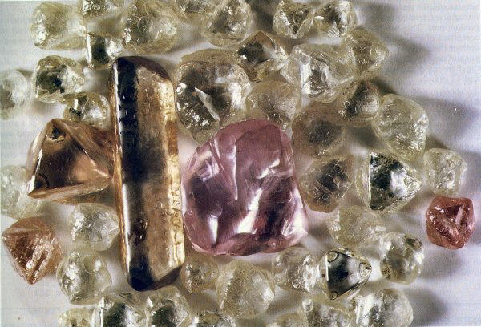The photo above is from Fazakerley (1990).
The Bow River alluvial diamond deposit occurs on the lower reaches of Limestone Creek, about 20 km north east of the Argyle diamond mine. The deposit was discovered by Gem Exploration and Minerals in the early 1980's and mined by Poseidon/Freeport and Normandy from 1988 until late 1995. The mine was known as the Normandy Bow River Diamond Mine (NBRDM) after the Normandy take-over of Freeport. The plant was placed under "care and maintenance" at the end of mining in late 1995. Astro Mining NL (Astro) purchased the tenements and infrastructure in late 1998 and undertook a review of the alluvial potential of the area.
Unfortunately insufficient resources were located to support a viable mining operation and the plant and infrastructure were rehabilitated a few years later. There remains about 1 million tonnes at a low diamond grade in the area but this area is regularly flooded each wet season with the rise and fall of Lake Argyle. Astro Mining carried out an extensive review of the data obtained from NBRDM searching for additional alluvial resources, as well as flying some detailed aeromagnetic surveys in the area seeking possible lamproite occurrences. Unfortunately none were found. Astro were also involved with joint ventures in the area with Conquest Mining testing the alluvial gravels of the Bow River to the south and east of the Argyle mine and alluvial gravels adjacent to the mining leases of the lower reaches of Smoke Creek.
Geology
The diamondiferous gravels of the Bow River alluvial deposit lie immediately north of Limestone Creek, some 20 km downstream from the Argyle pipe. The area of the alluvial deposits forms part of a low lying broad alluvial plain covered by superficial sand, silt, gravel and black soil (Biggs and Garlick 1987). Five diamondiferous gravel horizons were identified and two horizons, the T1 and T2 gravels, were the main focus of mining. Freeport defined a proven in-situ geological reserve of 1.434 mt at 0.524 ct/t for the T1 gravels and 9.945 mt at 0.383 ct/t for the T2 gravels. The mine produced some 7 million carats from the mining of about 24 million tonnes of gravels.

The image above is from the prospectus by Biggs and Garlick(1987) and shows the distribution of gravels and a cross section through the deposit. The economically mineralised gravels occurred as exposed surface gravels (T1) and under a black soil plain (T2) to the north of the current location of Limestone Creek. The T1 gravels are ferruginous in nature and are probably equivalent to the B Terrace gravels at the Argyle mine. The T1 gravels range in thickness from 0.04 to 1.1 m thick and were best exposed on isolated small hills. The T2 gravels are concealed beneath 0.6 to 5.7 m of black soil and range in thickness from 1.1 to 2.9 m. The gravels consist of cobble and boulders of up to 200 mm in diameter. The T2 gravels are probably equivalent to the C Terrace gravels of Argyle. Younger T3 and T4 gravel horizons cross cut the T2 gravels and are reworked gravels from the T2 gravels. The T5 gravels form the present day creeks.
The deposit was evaluated by pitting for geology followed by bulk sampling for diamond grade. This process was also used during the mining stage for mine planning. The images below shows the geological pits (small) with the larger pits excavated for grade determination.
The majority of the images below have been scanned from colour slides taken from the NBRDM offices before the offices were rehabilitated and were presumable taken by NBRDM staff during operations about 1992.
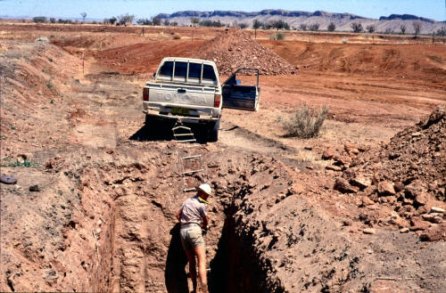Geologist mapping pits for geology.
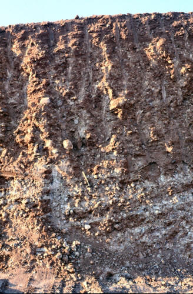Alluvial gravels exposed in pit.
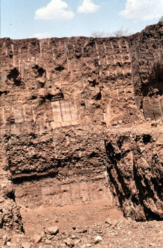Large pit showing alluvial gravels.
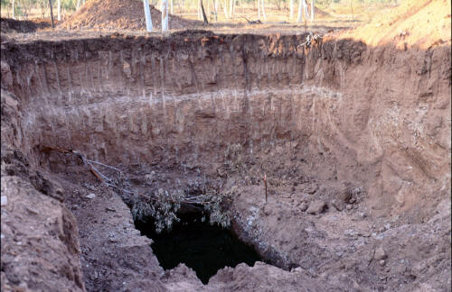Bulk sample pit.
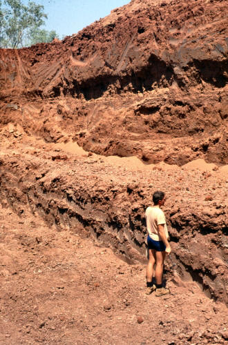Exposed alluvial gravels.
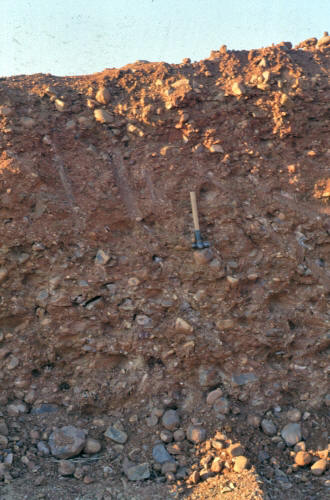Alluvial gravels in pit.
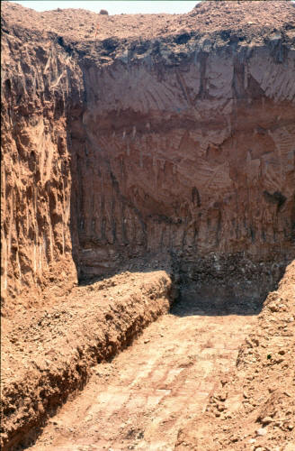Large excavation exposing alluvial gravels.
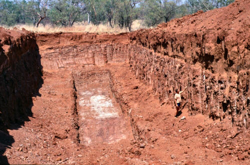Bulk sample pit.
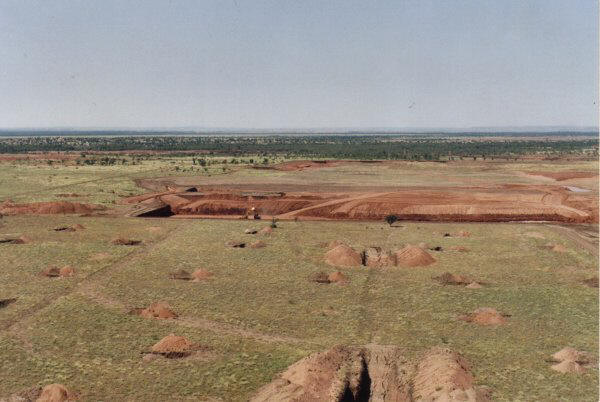General view of the area showing small pits for geology and larger pits for grade determination.
Mining
Mining was carried out by scraper to remove the overburden and hydraulic excavators to mine the gravel horizon and load into dump trucks. The image on the left shows the mining operation.
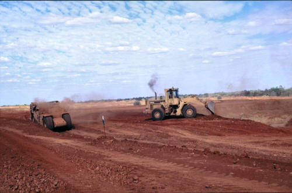Overburden stripping by scraper.
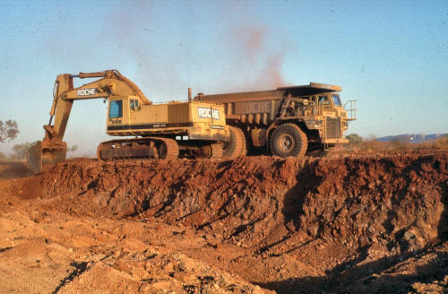Mining of alluvial gravels using hydraulic excavator.
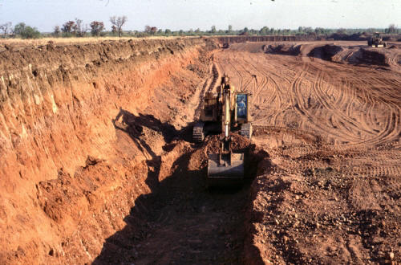Pitting of gravels below overburden layer.
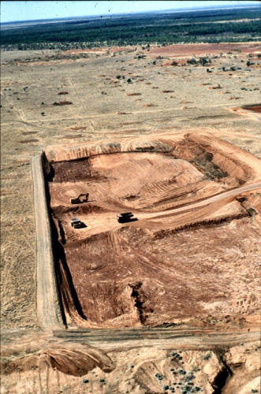Aerial view of mining.
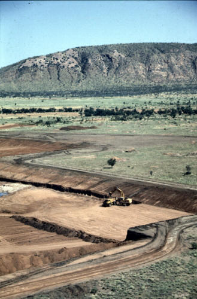Aerial view showing excavator and truck mining alluvial gravel layer.
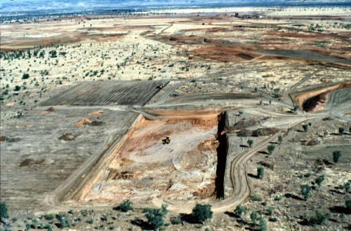Aerial view of mining.
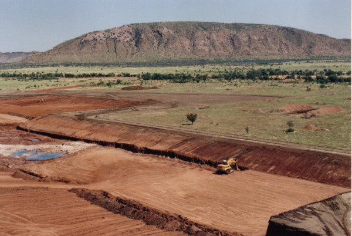Mining area showing batter of overburden behind truck and calcreted bedrock in the left of the photo.
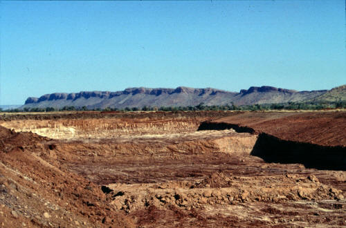View of mined block before infilling and rehabilitiation.
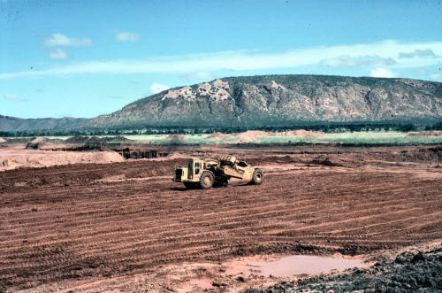Overburden stripping.
Processing
The process plant comprised a fairly typical scrubbing, screening and DMS separation plant with magnetic separation and X-ray sorting to process the concentrate. The product from the X-ray machine was hand sorted, then cleaned for export. The plant had a capacity of about 3.7 million tpa and recovered diamonds from 19 to 1.5 mm in size.
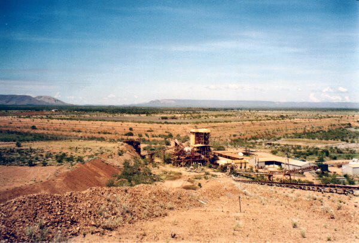Overview of plant looking towards the Argyle mine the from waste dump.
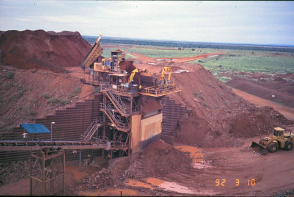Feed bin area.

Loading the feed to the plant.
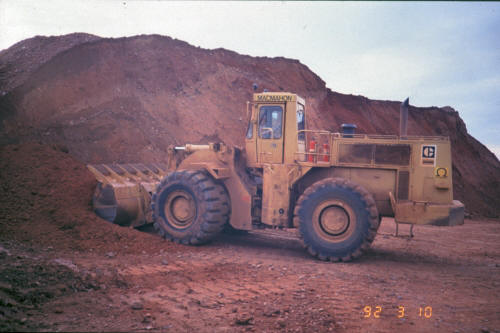Loader digging feed for plant.
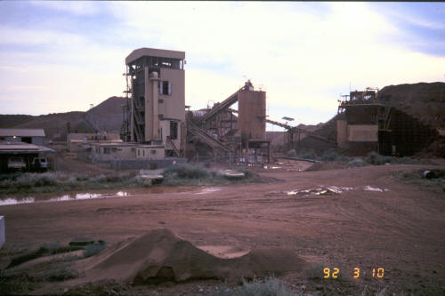View of the processing plant.
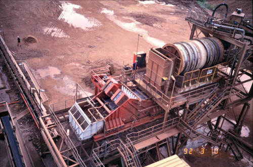Scrubbing and screening section.
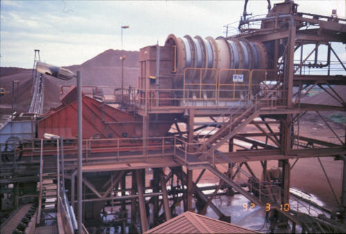Scrubbing and screening plant.
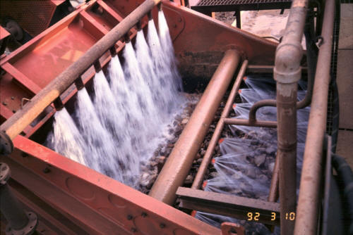Screening operations.
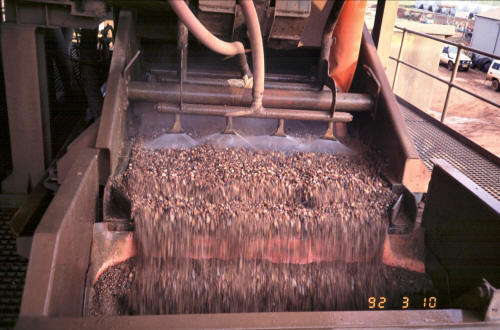Screening operations.
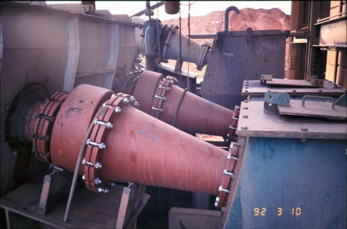HMS cyclones.
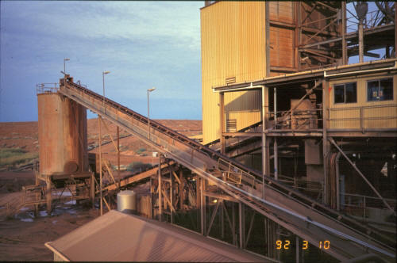Conveyor to the concentrate processing area of the plant.
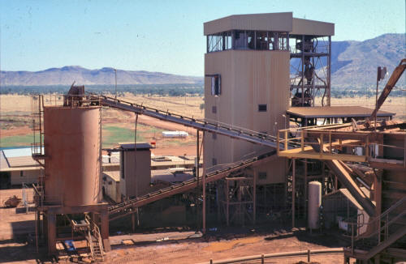HMS concentrate processing area.
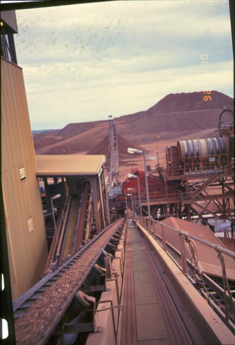HMS concentrate conveyor.
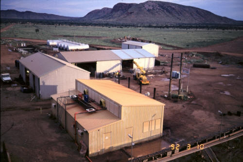Workshop areas.
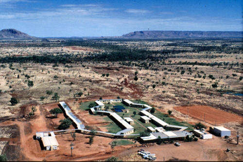Mine camp.